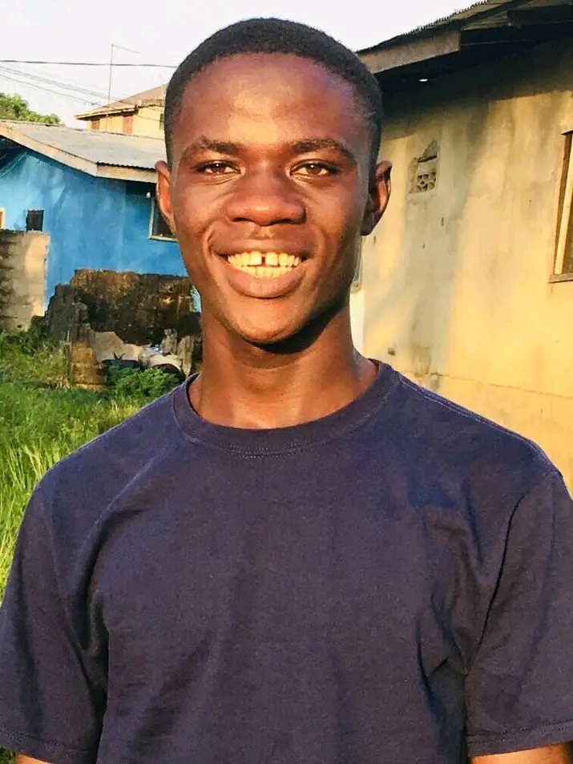
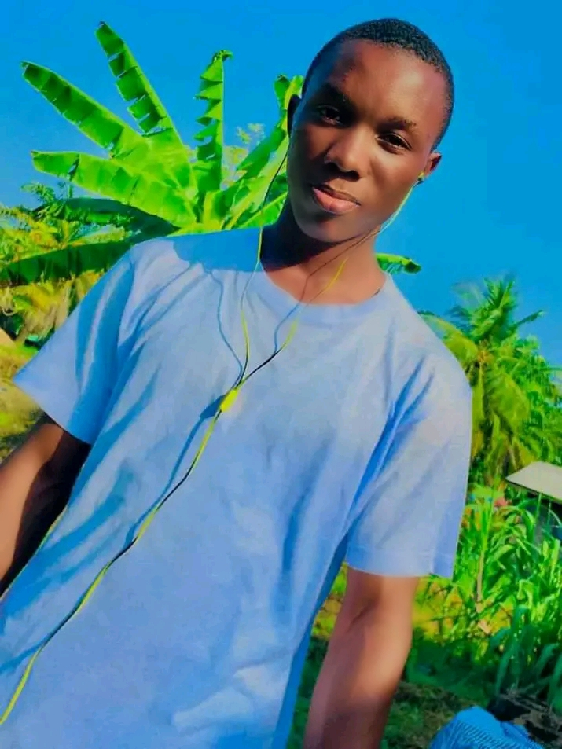

Goes by the name schoolbol, is a liberian comedian born august 20,2002 in River Gee county by a liberian parients, Susannah Wesseh his mother
and Abraham c Wesseh his father who originated from the same county. Schoolbol started primary education at the st. paul luthern school in Grand Gedeh county
as a kid. Schoolbol have three siblings
 of which Olive is his younger sister, Godfrey and Moneyman are his younger brothers.Schoolbol is a CMFI student currently, so as to get his first diploma. he has not been a celebrity in the pass years of which he's working on as we speak.
schoolbol said that the main reason he begain a comedian is that the world to know him an that he's acting so as to help release the stress from people's mind
day by day, which he said he suffer from a lot, schoolbol also said his faverest comedian is funnybros who he got motivated by, by watching his videos and laughing
he said that he always admire funnybros for he's really trying to make the world happy. schoolbol also said that he want to be like funnybros so that the world will continous to smile.
Joseph Gelego jr goes by the stage name Itz king j, is a comedy director and actor. He is a liberian born july 27, 2002
He was borned in paynesville city, montserrado county, liberia.
king j took to his official facebook page that his reason of being a comedian is to keep the world smiling at all time
William Kerkulah goes by the stage name sunboy is a libeian comedian, borned june 15,2000 from salayea district lofa county liberia.

started primary education at the international disciple training academy (IDT) located at (FDA) Monrovia liberia. currentlya student of the Samwa international academy.
 weah took to his facebook page that he is please that he is a comedian because it is a pleasure to see people laugh because of him.
weah took to his facebook page that he is please that he is a comedian because it is a pleasure to see people laugh because of him.